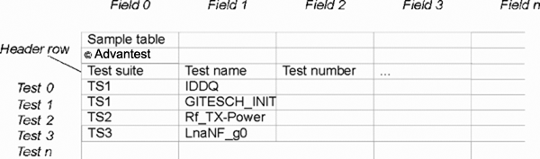

TestTable
The TestTable class is a general-purpose class for storing and manipulating the details of a test flow or CSV file.
The class constitutes a generalization of the traditional test table (or limit table). A class TestTable object resembles a spreadsheet-like table representing all the tests in a testflow. Each row represents a test from one of the testflow's test suites.
The TestTable object can have any number of columns (in addition to the mandatory test name column) to represent any desired data related to the test. Example for data that could be stored in these additional columns include:
- Test limits
- Test numbers
- Test stages
- Comments
The class also supports importing data from CSV files and exporting data to CSV files for easy integration with all kinds of workflows.
Elements in the test table can be accessed by names or by index. Indexes are zero-based, that is, the leftmost field and the topmost test have indexes of 0.
The test table can be imagined as being similar to a spreadsheet table:

This API is defined in the header file /opt/hp93000/soc/prod_com/include/TestTable.hpp.
Class definition
Constructors
TestTable::TestTable() TestTable* clone() TestTable* createInstance()
Destructors
void freeInstance(TestTable* table)
Member functions
int addField(const char* fieldName, bool visible, int pos)
int addTest(const char* testKey, bool visible, int pos)
void copy(const TestTable& table)
bool delField(int fieldPos)
bool delField(const char* fieldName, int dupFieldIndex)
bool delTest(int testPos)
bool delTest(const char* testKey, int dupTestIndex)
const char** getAddableTestsuiteNames()
TestTable* getDefaultInstance()
int getEditTimestamp()
int getFieldCount()
const char* getFieldName(int fieldPos)
int getFieldNameCount(const char* fieldName)
int getFieldPos(const char* fieldName, int dupFieldIndex)
int getFieldVisibleCount()
int getHeaderRowStart()
int getTestCount()
const char* getTestKey(int testPos)
int getTestPos(const char* testKey, int dupTestIndex)
int getTestVisibleCount()
const char* getValue(const char* testKey, const char* fieldName,
int dupTestIndex, int dupFieldIndex)
const char* getValue(int testPos, int fieldPos)
bool isActiveTestflow()
bool isContentComplete()
bool isCsvLoadNeeded(const char* filename)
bool isFieldVisible(int fieldPos)
bool isTestFunction(int testPos)
bool isTestVisible(int testPos)
bool isTestflow()
bool isTmLimitsCsvFile(const char* filename)
bool isUpToDate()
bool isUserProc(int testPos)
bool isValueReadOnly(int testPos, int fieldPos)
bool readCsvFile(const char* filename)
bool readTestflow(const char* filename)
void setActiveTestflow(bool active)
void setHeaderRowStart(int headerRowPos)
bool setLookupKeys(int keyCount, int* keyFieldPos)
void setUpToDate(bool upToDate)
bool setValue(int testPos, int fieldPos, const char* value)
bool setValue(const char* testKey, const char* fieldName, const char* value,
int dupTestIndex, int dupFieldIndex)
void setValueReadOnly(int testPos, int fieldPos, bool readOnly)
bool writeCsvFile(const char* filename)
bool writeCsvTemplate(const char* filename)
bool writeTestflow(const char* filename)
bool writeTestflowEntry(int testPos)Constructors
TestTable()
TestTable()
The constructor function for the class. It initializes all member variables. You can work with the default object (see getDefaultInstance(), below) and create additional instances using the createInstance() function (see below).
createInstance()
TestTable* createInstance()
Creates a TestTable instance object.
All objects created with this function must be destroyed with freeInstance() (see below) when they are no longer needed.
clone()
TestTable* clone()
Creates an identical copy of an existing TestTable instance and returns a pointer to it.
All objects created with this function must be destroyed with freeInstance() (see below) when they are no longer needed.
Destructors
freeInstance()
void freeInstance(TestTable* table)
Destroys the specified TestTable instance object.
This function cannot be used to destroy the default TestTable instance (see getDefaultInstance(), below).
table |
Pointer to the TestTable instance to be destroyed |
Member functions
addField()
int addField(const char* fieldName, bool visible, int pos)
Adds a field (column) to the test table. The function returns the position where the field was added. If there is an error, -1 is returned.
fieldName |
The name of the new field |
visible |
Whether the field is to be displayed in the user interface and included in CSV exports. The default is true. |
pos |
The position at which the field is to be inserted in the table. Numbering starts with 0. Special values include RIGHT_COLUMN for the rightmost column and LEFT_COLUMN for the leftmost column. The default is RIGHT_COLUMN. |
addTest()
int addTest(const char* testKey, bool visible, int pos)
Adds a test (row) to the test table.
testKey |
The key identifying the new test. See setLookupKeys(), below, for details on test keys. |
visible |
Whether the test is to be displayed in the user interface and included in CSV exports. The default is true. |
pos |
The position at which the test is to be inserted in the table. Numbering starts with 0. Special values include TOP_ROW for the topmost row and BOTTOM_ROW for the bottommost row. The default is BOTTOM_ROW. |
copy()
void copy(const TestTable& table)
Copies the data from the TestTable instance passed as an argument to the TestTable instance being called.
table |
The TestTable instance from which the data are to be copied |
delField()
bool delField(int fieldPos) bool delField(const char* fieldName, int dupFieldIndex)
Deletes a field (column) from the test table. The field can be specified in two ways:
- The first form specifies the position of the field in the table.
- The second form specifies the name of the field. In cases where there are several fields with the same name, an index can be provided to specify which of these fields is to be deleted.
The function returns true if the field was successfully deleted and false in all other cases, for example, when the specified position does not exist.
fieldPos |
The position with in the table of the field to be deleted |
fieldName |
The name of the field to be deleted |
dupFieldIndex |
Which of several fields with the same name to delete. For example, a value of 0 causes the left-most of all fields with the fieldName name to be deleted. If no value is specified, the first matching field is deleted. |
delTest()
bool delTest(int testPos) bool delTest(const char* testKey, int dupTestIndex)
Deletes a test (row) from the test table. The test can be specified in two ways:
- The first form specifies the position of the test in the table.
- The second form specifies the name of the test. In cases where there are several tests with the same name, an index can be provided to specify which of these tests is to be deleted.
The function returns true if the test was successfully deleted and false in all other cases, for example, when the specified position does not exist.
testPos |
The position within the table of the field to be deleted |
testKey |
The key of the test to be deleted. See setLookupKeys(), below, for details on test keys. |
dupTestIndex |
Which of several tests with the same key to delete. For example, a value of 0 causes the topmost of all tests with the testKey key to be deleted. If no value is specified, the first matching test is deleted. |
getAddableTestsuiteNames()
const char** getAddableTestsuiteNames()
Returns a list of names of the test suites to which a test can be added. The list is null-terminated.
getDefaultInstance()
TestTable* getDefaultInstance()
Returns a pointer to the default instance of the TestTable class.
The TestTable class includes a default instance that is always available. For applications involving just one table, this default instance can be used instead of instances created with createInstance() (see above).
getEditTimestamp()
int getEditTimestamp()
Returns the current value of a counter that is automatically incremented each time the TestTable object is modified.
This value allows you to determine whether a TestTable object has changed relative to a previously saved version.
getFieldCount()
int getFieldCount()
Returns the number of fields (columns) in the test table.
getFieldName()
const char* getFieldName(int fieldPos)
Returns the name of the field (column) at the specified position in the test table.
Column numbering starts with 0.
fieldPos |
The position of the field of which the name is to be returned. |
getFieldNameCount()
int getFieldNameCount(const char* fieldName)
Returns the number of times that a field name occurs in the test table. (That is, how many columns with a given name the table contains.)
fieldName |
The field name that you want to count |
getFieldPos()
int getFieldPos(const char* fieldName, int dupFieldIndex)
Provides the position of a field with a given name in the table. In cases where there are several fields with the same name, an index can be provided to specify which of the fields' positions is to be returned.
fieldName |
The name of the field the position of which is to be returned |
dupFieldIndex |
Which of several fields with the same name to return. For example, a value of 0 causes the position of the leftmost of all fields with the fieldName name to be returned. If no value is specified, the first matching field is used. |
getFieldVisibleCount()
int getFieldVisibleCount()
Returns the number of visible fields in the table. (See the visible parameter of the addField() function.)
getHeaderRowStart()
int getHeaderRowStart()
Returns the number of the row of the table that contains the header information (that is, column titles), as specified by the setHeaderRowStart() function (see below).
The number of the first row in the TestTable object is 0.
getTestCount()
int getTestCount()
Returns the number of tests (rows) in the test table.
The returned value includes the header row and
any rows above the header row. (The number of actual tests is getTestCount() -
getHeaderRowStart() - 1.)
getTestKey(int testPos)
const char* getTestKey(int testPos)
Returns the key of the test (row) at the specified position in the test table. See setLookupKeys(), below, for details on test keys.
Row numbering starts with 0.
testPos |
The position of the test of which the key is to be returned |
getTestPos()
int getTestPos(const char* testKey, int dupTestIndex)
Provides the position of a test with a given key in the table. In cases where there are several tests with the same key, an index can be provided to specify which of the tests' position is to be returned.
testKey |
The key of the test the position of which is to be returned |
dupTestIndex |
Which of several tests with the same key to return. For example, a value of 0 causes the position of the topmost of all tests with the testKey key to be returned. If no value is specified, the first matching test is used. |
getTestVisibleCount()
int getTestVisibleCount()
The number of visible tests in the table. This count does not include tests where the visible parameter is false. It does include the header row and rows above the header row.
getValue()
const char* getValue(int testPos, int fieldPos)
const char* getValue(const char* testKey, const char* fieldName,
int dupTestIndex, int dupFieldIndex)Returns the value of a cell in the test table. The cell can be specified in two ways:
- By specifying the test and field numbers (that is, the cell's coordinates in the table). This is the quicker method and the one that we recommend you use if the coordinates are known.
- By specifying the test key and field name. If either is not unique, you can also optionally specify the number of the test and/or field occurrence from which the value is to be taken. For example, you can specify the third occurrence of the test with the provided key.
testPos |
The position of the test from which the value is to be extracted. The first test has number 0. |
fieldPos |
The position of the field from which the value is to be extracted. The first field has number 0. |
testKey |
The key of the test from which the value is to be extracted . See setLookupKeys(), below, for details on test keys. |
fieldName |
The name of the field from which the value is to be extracted |
dupTestIndex |
From which of several tests with the same key to extract the value. For example, a value of 0 causes the value from the topmost of all tests with the testKey key to be returned. If no value is specified, the first matching test is used. |
dupFieldIndex |
From which of several fields with the same name to extract the value. For example, a value of 3 causes the value from the fourth field from the left among all fields with the fieldName name to be returned. If no value is specified, the first matching field is used. |
isActiveTestflow()
bool isActiveTestflow()
Returns the status of the testflow that was last read with readTestflow() (see below):
- true if the read testflow is the currently active testflow
- false in all other cases
isContentComplete()
bool isContentComplete()
This function checks whether all cells in the table are completely filled:
- true: Every cell in the table contains a value.
- false: There are one or more empty cells in the table.
isCsvLoadNeeded()
bool isCsvLoadNeeded(const char* filename)
Returns the need for reloading the specified CSV file from disk:
- true if the specified file has changed on the disk since it was last read by the TestTable class
- false if the file has not changed since it was last read
We recommend that you wrap calls to readCsvFile() (see below) in this method to avoid unnecessary reloads.
filename |
The name and path of the CSV file to check. If no file name is specified, the active CSV file is checked. |
isFieldVisible()
bool isFieldVisible(int fieldPos)
Returns whether the field at the specified position is visible, that is, whether it is displayed in the user interface and included in the CSV output.
fieldPos |
The position within the table of the field (column) to be checked |
isTestFunction()
bool isTestFunction(int testPos)
Returns whether the test at the specified position is a legacy ("yellow window") test function. (To do this, the test name field is searched for the reserved test function identifier string.)
testPos |
The location in the table of the test that is to be checked |
isTestVisible()
bool isTestVisible(int testPos)
Returns whether the test at the specified position is visible, that is, whether it is displayed in the user interface and included in the CSV output.
testPos |
The location in the table of the test that is to be checked |
isTestflow()
bool isTestflow()
Returns the source of the TestTable instance:
- true if the content was created by the readTestflow() function (see below)
- false if the content was created in a different way
isTmLimitsCsvFile()
bool isTmLimitsCsvFile(const char* filename)
Returns whether the specified file is a CSV file that has been created by TMLimits. The function checks the file by looking in the header for typical TMLimits entries.
filename |
The name and path of the file to be checked. If no file name is specified, the active CSV file is read. |
isUpToDate()
bool isUpToDate()
Returns whether the TestTable instance in memory is up to date, that is, whether it is identical to the version on disk. If false is returned, the version in memory contains unsaved changes.
isUserProc()
bool isUserProc(int testPos)
Returns whether the test at the specified position is a user procedure. (To do this, the test name field is searched for the reserved user procedure identifier
testPos |
The location in the table of the test that is to be checked |
isValueReadOnly()
bool isValueReadOnly(int testPos, int fieldPos)
Returns whether the value in the specified cell of the test table is read-only:
- true if the value cannot be modified
- false if the value can be modified
testPos |
The position of the test which contains the value to be checked. Test numbering starts with 0. |
fieldPos |
The position of the field which contains the value to be checked. Field numbering starts with 0. |
readCsvFile()
bool readCsvFile(const char* filename)
Reads the specified CSV file and populates the TestTable instance with the file's content, creating fields and test (columns and rows) as necessary.
Returns true if the file could be successfully read and false otherwise, for example, if the specified file is not a CSV file.
We recommend that you call isCsvLoadNeeded() (see above) before calling readCsvFile() to avoid unnecessary reloads.
filename |
The name and path of the CSV file to load. If no file name is specified, the active CSV file is read. |
readTestflow()
bool readTestflow(const char* filename)
Reads the specified file and populates the TestTable instance with any test names and limit values it finds. Any existing content of the TestTable instance is replaced.
Returns true if the file could be successfully read and false otherwise.
filename |
The name and path of the testflow file to read. If no file name is specified, the active testflow file is read. |
setActiveTestflow()
void setActiveTestflow(bool active)
Sets the "active" status of the testflow that was last read with readTestflow() (see above).
active |
The desired state of the testflow:
|
setHeaderRowStart()
void setHeaderRowStart(int headerRowPos)
Makes the specified row the header row.
By default, the very first row of the table is considered the header row. However, in cases where this row contains comments or other extraneous information, a different row can be set to be the header.
Rows above the header row usually contain commentary or other information not part of the testflow itself. The actual test descriptions start below the header row.
headerRowPos |
The position of the row that is to be the header row. |
setLookupKeys()
bool setLookupKeys(int keyCount, int* keyFieldPos)
Define which fields (columns) of the test table form the key for the tests, that is, by which column or columns tests are identified.
The function returns true if it could set the keys and false otherwise.
By default, the leftmost is assumed to contain the test name and is used as the key. However, you can designate any combination of fields as the key, for example, to use a combination of test suite and test name.
The elements of a multiple-field key are separated by colons. For example, if you have specified the first column (containing the test suite name) and the second column (containing the test name) as the key, the key of the IDDQ_00 test in the "TS1" test suite would be "TS1:IDDQ_00"
keyCount |
The number of fields (columns) that are to be used to form a key. (That is, the number of elements in the keyFieldPos array.) |
keyFieldPos |
The indexes of the fields that are to form the test key as an array. For example, a value of {0,1,2} instruct the system to create keys by combining the first, second, and third columns. |
setUpToDate()
void setUpToDate(bool upToDate)
Sets the "up-to-date" state of the TestTable object, that is, marks the table as containing or not containing changes that need to be saved to disk.
upToDate |
The state to which the TestTable instance is to be set:
|
setValue()
bool setValue(int testPos, int fieldPos, const char* value)
bool setValue(const char* testKey, const char* fieldName, const char* value,
int dupTestIndex, int dupFieldIndex)Sets the value of a cell in the test table. The cell can be specified in two ways:
- By specifying the test and field numbers (that is, the cell's coordinates in the table). This is the quicker method and the one that we recommend you use if the coordinates are known.
- By specifying the test key and field name. If either is not unique, you can also optionally specify the number of the test and/or field occurrence where the value is to be stored. For example, you can specify the third occurrence of the test with the provided key.
testPos |
The position of the test in which the value is to be stored. The first test has number 0. |
fieldPos |
The position of the field in which the value is to be stored. The first field has number 0. |
value |
The value that is to be stored in the cell |
testKey |
The key of the test in which the value is to be stored . See setLookupKeys(), below, for details on test keys. |
fieldName |
The name of the field in which the value is to be stored |
dupTestIndex |
In which of several tests with the same key to store the value. For example, a value of 0 causes the value to be stored in the topmost of all tests with the testKey key. If no index is specified, the first matching test is used. |
dupFieldIndex |
From which of several fields with the same name to extract the value. For example, a value of 3 causes the value to be stored in the fourth field from the left among all fields with the fieldName name. If no index is specified, the first matching field is used. |
setValueReadOnly()
void setValueReadOnly(int testPos, int fieldPos, bool readOnly)
Set the "read-only" status of the value in the specified cell.
testPos |
The position of the test in which the cell whose value is to be set is located. The first test has number 0. |
fieldPos |
The position of the test in which the cell whose value is to be set is located. The first test has number 0. |
readOnly |
Whether the value can be modified or not:
|
writeCsvFile()
bool writeCsvFile(const char* filename)
Writes the content of the TestTable object to the specified CSV file. Only fields and tests marked as visible (see addField() and addTest(), above) are exported.
If the CSV file is successfully written, the function returns true, otherwise it returns false.
filename |
The name and path of the target CSV file. If no name is specified, the test table is written to the active CSV file specified by the Test Table entry in the test program explorer. |
writeCsvTemplate()
bool writeCsvTemplate(const char* filename)
Writes the content of the TestTable object to the specified CSV file in a format that is compatible with TMLimits. These files can thus be processed with all TMLimit-compatible tools.
If the CSV file is successfully written, the function returns true, otherwise it returns false.
filename |
The name and path of the target CSV file. If no name is specified, the test table is written to the active CSV file specified by the Test Table entry in the test program explorer. |
writeTestflow()
bool writeTestflow(const char* filename)
Writes the content of the TestTable object to the specified testflow file. This requires the test keys in the TestTable object to match those in the specified testflow file. To ensure this, you must first call readTestflow() (see above) to import the testflow data in order to be able to modify them.
If the testflow file is successfully written, the function returns true, otherwise it returns false.
filename |
The name and path of the target testflow file. If no name is specified, the test table is written to the active testflow file. |
writeTestflowEntry()
bool writeTestflowEntry(int testPos)
Write the data for one test (row) from the TestTable object to the testflow file.
testPos |
The index (row number) of the test to write to the testflow file. |
Example
This example shows how to set up and save an instance of the TestTable class.
// Create an instance to work with:
TestTable* testTable = TestTable::createInstance();
// Create the fields:
testTable->addField("Limit Name");
testTable->addField("L_symbol");
testTable->addField("Lower Limit");
testTable->addField("U_symbol");
testTable->addField("Upper Limit");
testTable->addField("Test Number");
// Add the tests:
testTable->addTest("IDDQ_00");
testTable->addTest("IDDQ_01");
testTable->addTest("IDDQ_02");
// Populate the values:
testTable->setValue("IDDQ_00", "L_symbol", "GE");
testTable->setValue("IDDQ_00", "Lower Limit", "-5");
testTable->setValue("IDDQ_00", "U_symbol", "LE");
testTable->setValue("IDDQ_00", "Upper Limit", "100");
testTable->setValue("IDDQ_00", "Test Number", "1");
testTable->setValue("IDDQ_01", "L_symbol", "GE");
testTable->setValue("IDDQ_01", "Lower Limit", "-5");
testTable->setValue("IDDQ_01", "U_symbol", "LE");
testTable->setValue("IDDQ_01", "Upper Limit", "200");
testTable->setValue("IDDQ_01", "Test Number", "2");
testTable->setValue("IDDQ_02", "L_symbol", "GE");
testTable->setValue("IDDQ_02", "Lower Limit", "-1");
testTable->setValue("IDDQ_02", "U_symbol", "LE");
testTable->setValue("IDDQ_02", "Upper Limit", "10");
testTable->setValue("IDDQ_02", "Test Number", "3");
// Save the CSV file to disc:
string filename("/tmp/build_table.csv");
testTable->writeCsvFile(filename.c_str());
// Clean-up resources:
TestTable::freeInstance(testTable);Functional changes
- Introduced in SmarTest 6.5.0
- SmarTest 7.3.1: Added isContentComplete() function.